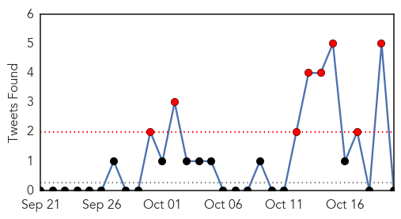

30 Day Trends
Web: 0 alerts, 0 warnings
Twitter: 8 alerts, 1 warnings
Top Articles:
- 0.992
- Iraq cholera cases grow, spread to Kurdish region
- 0.990
- Omanis visiting Iraq urged to take precaution
- 0.988
- NRT English
- 0.863
- Uganda, Algeria Strengthen Trade Ties
- 0.863
- Syrian Forces Poised to Retake Aleppo in ‘Decisive Battle’
- 0.863
- Algeria: Museveni Tours Africa’s Largest Refinery
- 0.859
- 2 hospitalized in Alabama for flesh eating bacteria
- 0.836
- GIVE HEALTH SECTOR ADEQUATE FUNDING
- 0.750
- South Sudan: Global Handwashing Day observed in Unity State
- 0.725
- Nigeria: A New MSF Emergency Project in Maiduguri - Nigeria
- 0.601
- The Impact of Open Defecation on Ghana
- 0.600
- Nigeria: A new MSF emergency project in Maiduguri
Top Tweets:
-
No tweets found for Oct 20, 2015
Web/News Articles

Tweets
Article Locations